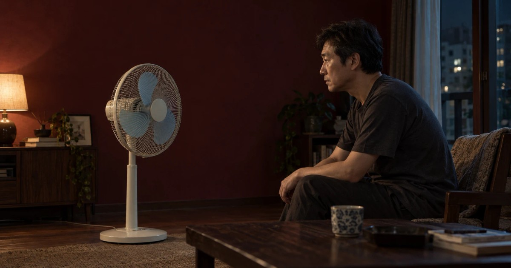

IMAGE CINEMA · TWO CUTS
공포의 선풍기 · 두 개의 시선
선풍기를 조립하고 실제로 남은 나사에서 시작된 생활 호러.
같은 노래 위에 서로 다른 편집을 얹은 V2와 V3를 같은 시점에서 비교하며,
구도·그림자·가림·몽타주가 만드는 불안을 경험한다.
노래·이야기 미리내맨 · 생활 호러 · 2분 54초

실제 남은 나사를 바탕으로
선풍기를 조립하고 나사가 남았다는 실제 경험에서 출발했습니다.
일상의 허당스러운 순간을 비장한 주인공과 서스펜스 호러의 화면으로 펼칩니다.
같은 노래, 두 개의 시선
V2는 조립과 가족의 반응에서 밤의 사건으로 이어집니다.
V3는 남겨진 흔적을 먼저 보여주고 구도,
그림자와 가림,
소리와 화면의 대위법으로 위협을 늦게 드러냅니다.
직접 비교하는 감상
감상실에서 V3,
V2,
나란히를 선택하면 음악의 재생 시각을 유지한 채 화면을 바꿀 수 있습니다.
정지 이미지와 분리된 레이어를 웹에서 합성하는 이미지 시네마이며 생성 동영상은 아닙니다.
원화 · AI 생성 실사 이미지와 분리 레이어
쓸데없이 장엄한 생활 시네마
「내일을 위해…」의 한밤의 다짐과 「공포의 선풍기」의 남은 나사는 작은 생활 경험을 쓸데없이 장엄한 시네마로 확장한 두 작품입니다.
이미지 시네마 창작노트에서 장면과 음악 사이의 여백을 더 읽을 수 있습니다